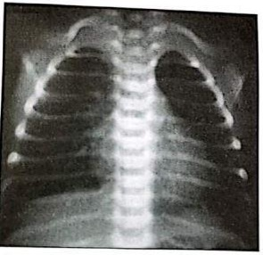

Recém-nascido com 5 horas de vida evolui com batimento de aleta nasal, gemência e taquidispneia. Há história materna de diabetes mellitus, sendo indicado parto cesárea por sofrimento fetal. O peso ao nascer foi de 2.300g, IG 35 semanas e RN do sexo masculino. Radiogra a de tórax aponta in ltrado reticulogranular difuso, com presença de broncograma aéreo e aumento de líquido pulmonar. Diante do quadro, qual a hipótese diagnóstica mais provável?
Recém-nascido, 35 semanas de idade gestacional, parto cesáreo por indicação materna, Apgar de 6 e 8 no primeiro e quinto minutos. Com 10 minutos de vida, após realização dos procedimentos de reanimação, inicia desconforto respiratório com taquipneia, gemido expiratório, leve retração subcostal e intercostal, batimento de asa de nariz e cianose. Saturação de oxigênio pré-ductal: 90%, FC: 115: bpm e FR: 78 irpm. Entre as seguintes condutas, a melhor para este paciente neste momento é:
Neonato, nascido de parto cesárea por macrossomia fetal e diabetes materna, 38 semanas de idade gestacional, peso: 4.020 g e Apgar: 8/9 e encaminhado ao Alojamento conjunto. Com 4 horas de vida desenvolve quadro de desconforto respiratório, labilidade de oxigenação e cianose progressiva sendo transferido para UTI e colocado em ventilação mecânica. A ausculta cardíaca evidencia uma hiperfonese da segunda bulha, sem sopros. Entre os seguintes diagnósticos, o mais provável para este recém-nascido é:
Recém-nascido de 33 semanas de idade gestacional nasceu de parto cesáreo de urgência por eclâmpsia materna. Nasceu deprimido e necessitou de manobras de reanimação. Apresentou Apgar 1 em sala de parto. Exame físico: estado geral decaído, gemente, dispneico e reativo. AR: murmúrio vesicular diminuído globalmente, tiragem subcostal, batimento de asa de nariz, FR: 82ipm, SatO₂ 89% em ar ambiente. Dentre as medidas abaixo realizadas na gestante, a que teria maior eficácia em prevenir esta condição clínica seria a seguinte:
Gestante de 36 semanas, com diagnóstico de diabetes gestacional, feto macrossômico, de apresentação pélvica, é submetida à cesárea, devido a pico hipertensivo. O líquido amniótico era claro com grumos, Apgar do recém-nascido foi 5/8 no primeiro e quinto minuto, respectivamente. Peso de nascimento 3800 gramas. Logo após o nascimento, iniciou quadro de taquipneia (FR 100 mpm), gemência, batimento de asa de nariz, retrações intercostais discretas, necessitando de CPAP nasal com FiO₂ de 0,25, mantendo saturação pelo oxímetro de pulso de 95%. Ausculta pulmonar sem ruídos adventícios, FC 130 bpm. Raios-X de tórax mostra discreta congestão peri-hilar e espessamento de cissuras interlobares. Assinale a alternativa que apresenta, corretamente, o diagnóstico para esse caso.
Neonato feminino, de cor branca, com idade gestacional de 35 semanas e 5 dias, pequeno para a idade gestacional (PIG), nascido de parto operatório indicado por diabetes gestacional em descompensação e asma materna, bolsa íntegra, líquido amniótico claro, APGAR 8/9, desenvolveu quadro respiratório de intensidade moderada. Hoje, 3º dia de vida, permanece em ventilação não invasiva, diminuindo-se a concentração de oxigênio de modo progressivo. Hemograma e proteína C reativa normais. Imagem radiológica mostra reti cação de costelas, hiperinsu ação pulmonar moderada com presença de algumas linhas opacificadas em campos pulmonares. Hemocultura negativa. Com base no relato do caso e no provável diagnóstico para esse neonato, além de prematuridade, diabetes gestacional, parto operatório, outro fator de risco que predispõe a referida evolução é
Recém-nascido, sexo masculino, nascido a termo por parto cesária em razão de doença hipertensiva da gestação e idade gestacional de 33 semanas e 5 dias; com 18 horas de vida, está taquicárdico, taquipneico, com retração costal e xifoide moderadas e gemido expiratório audível com estetoscópio. A radiogra a de tórax mostra in ltrado reticulogranular difuso, distribuído de maneira uniforme, broncograma aéreo periférico e aumento do líquido pulmonar. A hipotese diagnóstica provável é:
Considerando-se os dados obtidos na anamnese e os possíveis diagnósticos para distúrbios respiratórios no recém-nascido (RN), numerar a 2ª coluna de acordo com a 1ª e, após, assinalar a alternativa que apresenta a sequência CORRETA: (1) Febre materna ou perda de filho anterior com quadro de sofrimento respiratório. (2) Uso de anti-inflamatório não esteroide pela mãe, durante a gestação. (3) Parto cesárea em bebê com 36 semanas de idade gestacional. ( ) Taquipneia transitória do RN. ( ) Hipertensão pulmonar. ( ) Colonização por estreptococo do grupo B.
Um recém-nascido de 40 semanas, parto cesáreo, Apgar 8 no primeiro minuto, apresenta frequência respiratória de 80 irpm, gemência, batimento de aletas nasais e uso de musculatura intercostal. A radiogra a de tórax evidenciou congestão hilar, aumento da trama vascular, derrame pleural e hiperinsu ação. Após 48 horas de pressão positiva contínua na via aérea (CPAP), o recém-nascido ficou assintomático. O diagnóstico mais provável neste casa é:
Recém-nascido com 37 semanas de idade gestacional (parto cesáreo), com escore de Apgar 9/10, foi considerado adequado para a idade gestacional. A mãe teve a bolsa rota no momento do parto, e o líquido amniótico era claro. Logo após o nascimento, a criança passou a apresentar taquipneia. Ao exame físico, com 6 horas de vida, a ausculta pulmonar não revelou alterações, mas foram constatadas retrações intercostais. O hemograma indicou hemoglobina de 15g/dl, hematócrito de 45 g/dl, leucócitos de 24.000/mm³ (pró-mielócitos de 2%, bastonados de 10%, segmentados de 60%), e a proteína C reativa, 5 mg/l. O raio X de tórax encontra-se reproduzido abaixo. Diante do quadro, qual o diagnóstico mais provável?

Um recém-nascido prematuro (idade gestacional de 31 semanas ), AIG, desenvolve quadro de doença da membrana hialina grave, necessitando ventilação mecânica. No quinto dia de evolução, já em fase de desmame do ventilador, começou a apresentar necessidade de maiores concentrações de oxigênio, impossibilitando a progressão do desmame. Qual a complicação mais provável?
Recém-nascido de 37 semanas e 5 dias, de parto cesárea eletiva, com bolsa rota no ato, sem intercorrências no parto e no pré-natal, vacinação materna em dia. Trata-se de lho de mãe com asma, que apresenta na segunda hora de vida desconforto respiratório moderado, com taquipneia. Realizada radiogra a de tórax, que revelou hiperinsu ação pulmonar, cisuras viscerais e derrame pleural leve, com área cardíaca levemente aumentada. Ofertado O2 suplementar, com melhora total em 72 horas. Para o caso, assinale a alternativa com diagnóstico correto:
Recém-nascido de parto cesárea ausência de trabalho de parto, com idade gestacional de 36 semanas e 6 dias, e peso de nascimento de 2800kg, não necessitou de reanimação, e com 4 horas de vida, apresentou desconforto respiratório progressivo, necessitando de oxigenioterapia. A radiogra a de tórax mostrava acentuação proeminente da vascularização pulmonar, líquido nas ssuras interlobares e aumento da aeração. Com 36 horas de vida, o recém-nascido encontrava-se em oxigenioterapia, com FiO2 de 30%. A hipótese diagnóstica é:
Recém-nascido de termo, adequado para idade gestacional, nascido de parto normal, com APGAR 8 e 9 (1º e 5º minuto, respectivamente), sem necessidade de manobras de reanimação neonatal. Mãe, primigesta de 28 anos, realizou 7 consultas de pré-natal sem intercorrências, bolsa rota 4 horas antes do parto, pesquisa de Estreptococo do grupo B negativa. No décimo minuto, ainda na sala de parto, o bebê apresentou desconforto respiratório com Boletim de Silverman-Andersen de 3, sendo encaminhado à unidade de cuidados neonatais para oxigenioterapia. A principal hipótese diagnóstica é
Recém-nascido, pré- termo (32 semanas de idade gestacional), desenvolve nas primeiras horas de nascimento, gemência, retrações intercostais, taquipneia, batimentos de aletas nasais, cianose e aumento da necessidade de oxigênio. De acordo com o diagnóstico MAIS PROVÁVEL, é esperado encontrar na radiografia de tórax:
Logo após o nascimento, um recém-nascido de 38 semanas apresentou frequência respiratória de 78 irpm, gemência, batimento de asas de nariz e tiragem intercostal. A radiogra a de tórax mostrou hiperinsu ação e in ltrado peri-hilar que se dirige à periferia. Foi colocado em CPAP nasal e em três dias ficou assintomático. O fator que pode estar relacionado à principal hipótese diagnóstica é a:
Após parto cesáreo, RN de 35 semanas de idade gestacional necessita de ventilação com pressão positiva na sala de parto. Com 30 minutos de vida, apresenta FR 80 irpm, tiragem intercostal e batimento de aletas nasais. O padrão radiológico esperado, a etiopatogenia e o tratamento para estabilização do paciente são, respectivamente:
Recém-nascido de 38 semanas, nascido de parto cesáreo por iteratividade, bolsa rota no ato, com líquido amniótico claro, sem relato de intercorrências obstétricas. Chorou ao nascer, Apgar 09/09, porém evoluiu com taquidispneia, cerca de 10 minutos após o nascimento. Ao exame físico, apresenta retrações intercostais, com ausência de crepitações à ausculta pulmonar. RX de tórax: área cardíaca normal, com aumento da trama vascular pulmonar. Diante do exposto, a principal hipótese diagnóstica é:
Congestão perihilar radiada e simétrica, espessamento de cisuras interlobares, hiperinsu ação leve a moderada, podendo ocasionalmente apresentar discreta cardiomegalia e/ou derrame pleural.” Esta descrição radiológica pertence a um recém- nascido com o seguinte diagnóstico:
Recém-nascido de 37 semanas e 6 dias, nascido de parto cesáreo, sem intercorrências, com peso de 3100g e 48 cm, Apgar 9/10. A bolsa amniótica foi rompida na cesárea com saída de líquido amniótico claro. Foi realizado aplicação de BCG e Hepatite B e vitamina K. Após 20 minutos RN apresentou taquipneia, gemencia com retrações intercostais e batimento de asa nasal. Exame físico: MV presente e simétricos, bulhas ritmicas sem sopros, abdome globoso e normotenso. Realizado RX de tórax: com aumento da trama vascular pulmonar. História obstétrica: primeira gestação com ganho de 9 quilos sem intercorrências com exames normais. Diante do quadro, o diagnóstico é:
Recém-nascido do sexo masculino, idade gestacional de 36 semanas e 5 dias, cesárea eletiva sob anestesia geral, peso de 2900g, Apgar 7 e 9. Logo após o nascimento, começou a apresentar desconforto respiratório, caracterizado por taquipneia, gemência, tiragem costal e subdiafragmáticas leves, saturação arterial de oxigênio = 98% em ar ambiente. Qual é a fisiopatologia envolvida nesse caso de desconforto respiratório do RN?
Um recém-nascido de 27 semanas de idade gestacional, peso de nascimento de 890 g e nascido de parto cesáreo de urgência devido à pré-eclâmpsia materna, apresentou APGAR 1.º min = 3, 5.º min = 5 e 10.º min = 7. Foram realizadas manobras de reanimação neonatal e o paciente foi intubado em sala de parto. Na admissão na UTI neonatal, o paciente encontrava-se estabilizado em ventilação mecânica em modo assistido e controlado, com PEEP = 6 cmH2O, Pinsp = 15 cmH2O, frequência respiratória de 30 ipm e FiO2 = 50%. Realizou radiogra a de tórax, que evidenciou in ltrado reticulogranular bilateral difuso, associado à presença de broncogramas aéreos. Com base na doença pulmonar diagnosticada no paciente desse caso hipotético, assinale a alternativa correta.
Síndrome do desconf orto respiratório do RN SDR ou Doença da Membrana Hialina DMH Um recém-nascido de 27 semanas de idade gestacional, peso de nascimento de 890 g e nascido de parto cesáreo de urgência devido à pré-eclâmpsia materna, apresentou APGAR 1.º min = 3, 5.º min = 5 e 10.º min = 7. Foram realizadas manobras de reanimação neonatal e o paciente foi intubado em sala de parto. Na admissão na UTI neonatal, o paciente encontrava-se estabilizado em ventilação mecânica em modo assistido e controlado, com PEEP = 6 cmH2O, Pinsp = 15 cmH2O, frequência respiratória de 30 ipm e FiO2 = 50%. Realizou radiogra a de tórax, que evidenciou in ltrado reticulogranular bilateral difuso, associado à presença de broncogramas aéreos. Com base nesse caso hipotético, assinale a alternativa que apresenta os diagnósticos corretos.
RN de 36 semanas de idade gestacional, parto cesáreo por indicação materna. Apgar de 5-7 no primeiro e quinto minutos. Após os procedimentos habituais de reanimação, com 15 minutos de vida, apresenta desconforto respiratório caracterizado por gemência, batimento de asa nasal, tiragem intercostal e retração diafragmática. A saturação de oxigênio pré-ductal é de 91% com FC 110 bpm e FR 80 irpm. A conduta mais adequada é
Recém-nascido de parto cesárea de urgência por sofrimento fetal agudo na 42ª semana de gestação, líquido amniótico meconial, reanimado em sala de parto com VPP entubado, massagem cardíaca e adrenalina endovenosa (Apgar 1/3) e transferido para UTI neonatal para suporte ventilatório e hidroeletrolítico. Sobre este caso é correto afirmar:
O principal constituinte do surfactante pulmonar é:
Recém-nascido de parto cesáreo, a termo, adequado para a idade gestacional, Apgar 9/9. Apresenta, na primeira hora de vida, taquipneia e leve retração subcostal.Transferido para UTI, colocado sob oxigenioterapia (oxihood com FiO₂=30%), dieta zero e hidratação venosa. A radiogra a de tórax evidencia presença de líquido nas ssuras intralobares e proeminência das marcas vasculares pulmonares. Após 24 horas o paciente evoluiu com resolução do quadro sem necessidade de outras intervenções. A hipótese diagnóstica mais provável é:
Recém-nascido com 31 semanas de idade gestacional, com uma hora de vida apresenta di culdade respiratória. Qual o diagnóstico possível?
Recém-nascido de 32 semanas de idade gestacional e 1 hora de vida apresenta desconforto respiratório. Nasceu de parto vaginal após genitora chegar em período expulsivo a serviço de emergência obstétrica. Apresentou Apgar1':7 e 5':9 e recebeu ventilação com pressão positiva ao nascer. Exame físico: estado geral regular, dispneico, TSC + e TIC +, gemente, corado, hipoativo. AR: murmúrio vesicular presente, sem ruídos, pouca expansibilidade torácica, FR: 74 ipm, SatO₂ 91% em CPAP com FiO₂50%. Uma radiografia de tórax desse paciente deve mostrar
Você atende um recém-nascido com idade gestacional de 29 semanas e peso de 1100 gramas. Aos 2 dias de vida encontra-se em incubadora aquecida, sob ventilação mecânica, devido a quadro de insu ciência respiratória. A radiogra a simples de tórax mostra campos pulmonares com in ltrado reticulogranular difuso e uniforme, broncogramas aéreos e aumento do líquido pulmonar. Em relação à fisiopatologia dessa doença, assinale a alternativa correta.
RN com 36 semanas de idade gestacional, cesárea eletiva, sem trabalho de parto. Mãe saudável e com pré-natal sem intercorrências. Boletim de Apgar = 5-7-9, recebeu um ciclo de ventilação com pressão positiva na sala de parto. Desenvolveu distúrbio respiratório precocemente, caracterizado por taquipneia e tiragem intercostal. O padrão do Rx de tórax e a respectiva conduta são:
Prematuro com 30 semanas de idade gestacional desenvolveu, logo após o parto, desconforto respiratório, necessitando de entubação e ventilação mecânica com altos parâmetros. O parto foi cesáreo devido a descolamento prematuro de placenta e a bolsa amniótica tinha rompido 72 horas antes. Analise as afirmativas abaixo, baseado nessa história clínica: 1. O uso de surfactante exógeno pode ser benéfico. 2. Pneumonia congênita deve ser um dos diagnósticos diferenciais. 3. O desconforto respiratório pode ser secundário à doença da membrana hialina (síndrome do desconforto respiratório do recém-nascido). Assinale a alternativa que indica todas as afirmativas corretas.
Observe a cha de atendimento de um paciente que foi admitido na Unidade de Terapia Intensiva do Hospital Pequeno Príncipe e a seguir indique o provável diagnóstico. Idade: 2 dias de vida; queixa principal: gemência e di culdade respiratória; história da doença atual: RN de 1.600, 32 semanas de idade gestacional, mãe com 25 anos e na sua segunda gestação. Parto Normal, pré-termo, APGAR 6 e 8. Leve desconforto respiratório logo após o nascimento, sendo colocado em incubadora aquecida e oxigenoterapia a 3 litros por minuto na própria incubadora. Com quatro horas de vida a frequência respiratória era de 72 irpm, com retrações e gemência, sendo o RN transferido para a nossa UTI Neonatal:
Recém-nascido com 31 semanas de idade gestacional, com uma hora de vida apresenta di culdade respiratória. Qual o diagnóstico mais provável?
Na síndrome da aspiração de mecônio, o uso de surfactante é indicado por:
Recém-nascido de parto normal, IG de 39 semanas, bolsa rota no ato, sem intercorrências durante o pré-natal e parto. Logo após o nascimento, apresentou desconforto respiratório leve, FR de 88 ipm, imagem radiológica do tórax, apresentando hiperinsuflação pulmonar, estrias peri-hilares e líquido nas fissuras interlobares. A conduta é
Recém-nascido de parto cesáreo pré-termo (idade gestacional de 36 semanas e 3/7), logo após o nascimento começou a apresentar quadro de desconforto respiratório caracterizado por taquipneia (frequência respiratória de 80 irpm), cianose e tiragem intercostal discreta. Com 3 horas de vida, foi realizada radiogra a de tórax, que revelou cardiomegalia discreta, congestão peri-hilar e presença de líquido entre as fissuras. O diagnóstico mais provável é:
Qual a função do surfactante pulmonar?
Recém-nascido (RN), masculino, termo, com peso adequado para a idade gestacional, pré-natal materno sem intercorrências, parto normal, com liquído meconial uido +/4+, APGAR 5/9. Apresenta com 6 horas de vida, piora do padrão respiratório, que se intensi ca e com 12 horas de vida necessita de entubação endotraqual de urgência, sendo colocado em ventilação mecânica e mantendo saturação de 85%, mesmo com parâmetros altos. O hemograma de12 horas de vida mostra 24.000 leucócitos (1% bastões/65%segmentados/1% de eosinó los/0% baso los/ 10% monócitos e 20% de linfócitos) e 240.000 plaquetas. Rx de torax sem alterações. Ecocardiagrama mostra shunt direita esquerda pelo ducto arteriosus e forame ovale com hipertensão pulmonar (HP) com repercussão hemodinâmica importante . RN se encontra em leito de observação no centro obstétrico, em serviços sem neonatologista e sioterapeuta sendo regulado para a UTI neonatal, parém, sem probabilidade de vaga imediata. Qual a melhor conduta para esse caso?
Revisar: possível letra faltando em enunciado
Logo após o nascimento, um recém-nascido de 35 semanas de idade gestacional e peso 2500 g, encontra-se com batimento de asa de nariz, gemente, com retração esternal importante e cianose de extremidades. A frequência respiratória é de 64 rpm e saturação de oxigênio de 94%. Qual a melhor conduta para o bebê, dentre as abaixo citadas?
Recém-nascido com 6 horas de vida com batimento de asa nasal, gemência, taquidispneia e retração intercostal. História materna de diabete melito, sendo indicado o parto cesáreo por sofrimento fetal. Peso ao nascer de 2.650 g, idade gestacional de 35 semanas e sexo masculino. Radiogra a de tórax com in ltrado reticulogranular difuso, presença de broncograma aéreo e aumento do líquido pulmonar. Qual a hipótese diagnóstica mais provável?
Dentre as consequências que podem sobrevir à criança nascida por cesariana sem trabalho de parto, destaca-se a ocorrência, em curto prazo, de problema respiratório por manutenção do líquido pulmonar. A radiogra a do tórax é auxiliar no diagnóstico e evidencia:
Logo após o nascimento, um Recém-Nascido (RN) de 33 semanas de gestação evolui com taquipneia, batimento de asa de nariz e gemidos, necessitando de intubação. A radiogra a de tórax evidencia atelectasia, aspecto de vidro-fosco e alguns aerobroncogramas. Qual a principal hipótese diagnóstica?
RN GIG, com 35 semanas de idade gestacional, lho de mãe diabética tipo I, apresenta-se ao nascimento, taquidispnêico +++/4+ necessitando de 60% de oxigênio, apesar do uso de pressão positiva contínua nas vias aéreas (CPAP) de 5 cmH₂O. O diagnóstico mais provável é :
Assinale a assertiva CORRETA em relação à doença da membrana hialina:
O exame considerado padrão ouro para confirmação do diagnóstico de hipertensão pulmonar persistente do recém- nascido é?
A administração do surfactante pulmonar por via intratraqueal ao neonato é o tratamento de escolha para qual patologia do recém-nascido?
Um recém-nascido a termo, com Apgar de 4 e 6, duas horas de vida, apresentou taquipneia, desconforto respiratório e cianose rapidamente progressiva. Evoluiu com queda da saturação de oxigênio a qualquer manuseio, com demora para retornar aos níveis normais, apesar da oferta de oxigênio a 100%. O melhor exame para a investigação diagnóstica é:
A Doença das Membranas Hialinas ou Síndrome de Desconforto Respiratório é uma doença frequente e fundamentalmente relacionada à de ciência primária de surfactante. Observe as a rmativas abaixo e marque a sentença correta a respeito da Doença das Membranas Hialina no recém-nascido.
Qual a principal ação do surfactante no pulmão do recém-nascido? Respostas: 1 12 23 34 45